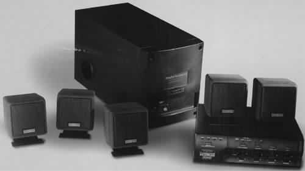
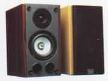
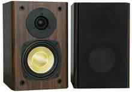

|
|
| 当前位置：电脑报电子版 > 1999 年 > 41 期 > 硬件周刊 > 多媒体音箱的认识和选购 |
| 《 多媒体音箱的认识和选购 》 |
| 多媒体电脑发展到了今天，音箱的重要性正逐渐被大家所认识，但实际用户在攒机或是升级机器时，声卡和音箱仍是预算中最少的部分。在科学的多媒体设备配置中，什么价位的音箱符合自己需要，如何去认识和选择音箱、识别伪劣产品呢？这正是本文要为大家解决的问题。
一、 音箱的结构组成 1．外壳。常见的音箱主要为木制或塑料制成，木制音箱为复合的中高密度板所制，厚度应该在10mm以上，它比塑料音箱有更好的抗谐振性能，扬声器可承受的功率更大，体积也不受限制；塑料音箱为模具一次性成型产品，在造型上可以做得很好，但体积相对较小，且可承受的扬声器功率也相对较小。劣质音箱主要是密度板的密度不够，板材很薄或是塑料的质地松脆有沙孔，易裂。 
二、 音箱的主要性能指标 音箱作为声音的还原设备就是将电信号转换成声音信号，然后将声音信号释放出来，对录制的声音还原质量的好坏就应该成为评价音箱的标准，这就是我们常说的保真性，还原质量好的音箱通常被叫做高保真音箱。然而并不一定高保真的音箱就是最好听的音箱，因为这与人耳对不同频率的声音的敏感程度有关。音箱的性能指标主要有以下几点：1．功率。首先要声明的是这与音箱本身音质音色方面的性能无关。作为普通家庭用的多媒体音箱，2×30W已经是绰绰有余了，再大的功率的音箱只有帮你浪费钱这一个“好处”！ 2．频率范围与频率响应。这两个名词本来应该单独解释，但是经常被我们合二为一说成是频响。一般音箱标注的都是xxHz－xxKHz，频响范围指标在国内的厂家标注的普遍偏大，比如一款二三百元的音箱低频下限标为40Hz，看后令人咋舌。对此还要耳听为实，不能单看宣传单上的标注数值。 3．信噪比。指音箱回放的正常声音信号与噪声信号的比值，以dB表示。信噪比低时，小信号输入噪音严重。厂家多以功放芯片的数值进行标注。 4．失真度。以百分数表示，此项一些音箱标为放大器芯片的失真度，其数值是越小越好。其实对于整个音箱系统而言，失真度最高的部分是扬声器，一般的情况下都有百分之几，其他部分与之相比都只是个零头。对于音箱的设计思路来讲，电路是应该越简洁越好，这样才尽可能地避免失真的发生，而诸如SRS、BBE等技术的加入本身也是一种失真。 三、常见音箱评述与推荐 1．低档音箱。主要是定位在二百余元以下的产品，包括了普通的塑料音箱与入门级的木制音箱。如三诺、丽歌、爵士、迪波（迪霸）等是在塑料音箱的制造方面较为有特色的。它们的造型丰富、种类繁多，适于与家电、室内装饰来搭配摆放。在木制音箱方面，值得推荐的有润宝轻骑兵的M2、冲击波的FAM－242、漫步者的1000TC、国立公司的T200CN、奋达SPS611等为代表的一些音箱。这些音箱的功率大都是2×15W，从性能上客观的说信噪比在80dB、系统频响范围在100Hz～18KHz附近，比此再高的性能基本是不可能的了。2．中档音箱。主要定位在300元到500元的价位上，推荐产品如漫步者的R1900T为2×30W的大箱体音箱，采用丝膜球顶和陶瓷纸盆低音单元，各方面都不错，性价比较高，约500元；冲击波的WAVE－1000S是一款很标准的产品，2×25W，防弹布盆，在低音和感染力方面的表现不俗，约400余元；漫步者R1800ATP是PP盆的，对柔美乐声和人声的表现力很好，400元左右；国立的T300C，2×15W，白色箱体整洁美观，前面板的调节方便，音域平稳均衡，性能良好，约300多元；润宝轻骑兵M4.2，2×20W，为丝膜球顶高音和防弹布的低音单元，中低音强劲，瞬态频响好，价格450元左右。 3．高档音箱。五百元以上的产品，其中包含了一些USB音箱。润宝轻骑兵的USB99虽箱体小但动态效果与音乐味非常好，亲切悦耳，但它在别的方面也存在一些缺点；漫步者USB1900，这是R1900T增加了BBE和USB接口技术后的产品，使小弱信号的表现更好了，600余元。R2600TB为纸化羊毛盆的低音单元，对乐声人声表现得亲切柔和，700多元；冲击波WAVE－1800SRS是一款经典产品，子弹锥体的低音单元，声音定位准确、富有音乐质感，带SRS功能，价格800多元。SAT251S/253S/254S都是冲击波’99的新款产品，为不同喜好的人而设计，所以低音单元采用了不同的材质：有松压盆、PP盆等，价格从500到600多元不等；国立的USB300S，加入了SRS和USB接口技术，约680元。 4．多声道音箱。在2.1组合方面除了创通的PC Work2.1音箱外，国立的VA2.1和漫步者的R2.1T都是最新的木制多声道音箱的代表，性能不俗，价位在400元左右。此外爵士、迪波、外星人、格新等品牌也有塑料的2.1产品，产品种类丰富。在4.1和5.1方面的产品较少，PC Work4.1和漫步者R4.1T分别是塑料和木制的产品，价位在600元左右。5.1音箱中有格新的DF－541和创通的DeskTop Theater 5.1系列产品，前者不带声音解码，后者最新的产品为DTT2500 Digital。有兴趣的朋友不妨到飞翔鸟硬件资讯站看看。 （飞翔鸟 孔明） |
| 下载本期推荐软件 | 页 首 |
| 《电脑报》版权所有，电脑报网站编辑部设计制作发布 |